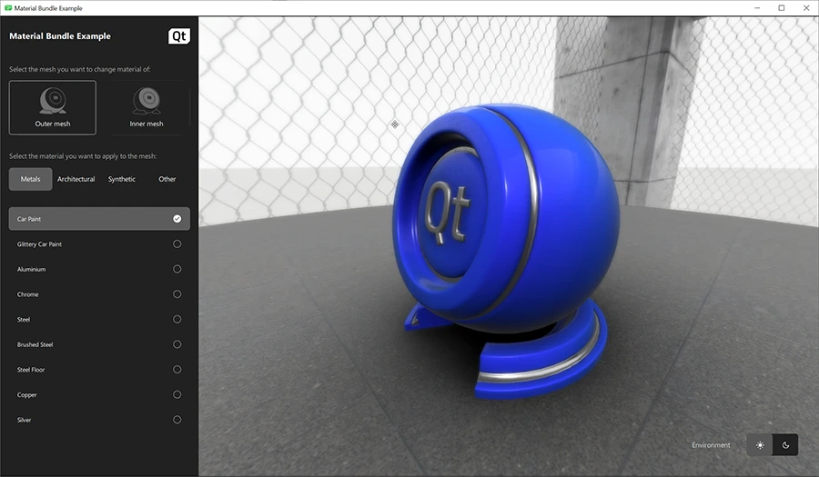

Material Bundle

The Material Bundle example showcases the materials included in the Qt Design Studio Content Library and the real-time 3D rendering capabilities of Qt Design Studio.
Run the project to:
- Select the material for two different meshes; all material bundle materials are available.
- Navigate (rotate and zoom) with the mouse.
- Choose between two different environment light options.
The Material Bundle
The material bundle is included in Content Library which is included in the Qt Design Studio Enterprise license. It contains a ready-made set of materials that you can apply to your 3D models by dragging and dropping.

See also Content Library.